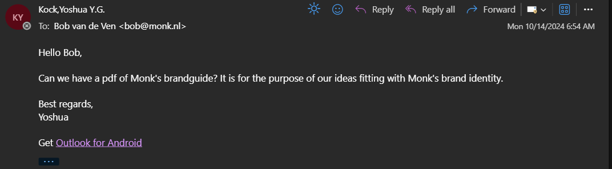
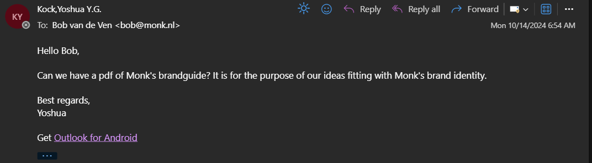

Project Plan
The project started with a good amount of research methods with the purpose to get a better understanding on what we should do. This is the project plan made to summarize the work that was done before the first presentation with Monk. I have structured the document and the content was made by me and the group. I will explain more on the work I did from all of this.
Brainstorming/Mind Mapping
The brainstorming process began with a verbal brainstorming session where me
and the other group members shared and discussed ideas. Though it got us a
start in sparking some idea, it lacked a structure and did not get us far.
To have a proper brainstorming method going that would get us far, I proposed
going with the mind mapping method. The template for the mind mapping method
was taken online but the content was all me and my group. The map was centered
around the question of “How do we get people to go to the Monkshop”, and from
there developed themes.
For the poster theme I helped in bringing the chalk
handprints concept, where the chalk handprints reference the climbing part of
bouldering and was something that would catch the eye of bystanders to then
follow the handprint trail to the poster.
For the flyer theme, this was one of the less inspired type of concept that involves
flyers. It wasn't just a flyer that is handed at a train station or in a city where
everyone else is walking by. The idea I had for this was that the flyers would be
placed on a stand that is near any bouldering hotspots. Having a flyer stand in the
outdoors is very out of place and I thought of it of a good way to get people curious
enough to walk by and pick a flyer which would contain information on what you would
need for outdoor climbing and encouragement to head over to the Monkshop.
For the commercial theme I had this strange idea to have some sort of mascot that could
be used for commercial purposes and something to add to Monk's branding. This was a
throw-at-the-wall-and-see-what-sticks idea which I thought of a superhero-like mascot
that represents the Monkshop. It was thought out after a lesson in looking at succesful
campaigns via commercials and I thought back to mascots that make it work like the Geico
gecko or the Michelin Man. A storyboard was partially made with the mascot in mind but was
then left uncomplete as the idea is not something we will pitch to Monk.
The customer engagement theme ideas were all brought onto the mind map by me. The idea
for the Demo Days was Monk hosting an event near an outdoor climbing hotspot with the purpose of
having people come over and test their gear, to boost the confidence in the products Monkshop offers,
which would lead in potential customers heading over to the Monkshop to purchase the gear after testing them.
The QR scavenger hunt idea was to have QR codes hanging near outdoor climbing hotspots which people can engage
in scanning them to recieve discounts for Monkshop's products.

Interview with client
There was some problems on how to start with the outdoor climbing pillar theme me and my team got to focus on for this
project so I and sent an email to Bob from Monkshop to get better insight on how outdoor climbing goes with the
process and important gear, potential hotspots in the Netherlands that my group and I could go for observation and
a brandguide so any mockup me and my group creates that fit the color scheme and font of Monk and what we need to do
in order to check inside the Monk bouldergym in Eindhoven for some observation on the shop and bouldering zone.
The insight gotten from this was that Eindhoven, the Netherlands in general, has no real hotspot for any outdoor
bouldering, which limits me any my group in an observation research on outdoor climbing. Also getting an idea of the
guidebook, the TOPO's, as there was an idea before on doing a concept on the guidebook's themselves. As for the brandguide,
some sort of document or anything else that we can use as Monk's brandguide for our mockups was never recieved.

Built For You Message
After the presentation with Monk with showing the work me and my group had so far, we got feedback that was used to make some changes on everything we had. Firstly, the target audience is now aimed at Monk's already existing customers instead of focusing on potential new ones. The poster concept would needed to align now with the Built For You message and ditch the chalk handprint idea as Monk thought it would cause danger to their climbers who are busy with their activity or anyone else who tries to reach high and see the posters. The QR scavenger concept would be ditched entirely as it was looked at as more of a marketing stunt than a longterm media campaign. I'll have here the overall document regarding the Built For You message, which I helped in structuring, and the work I have done explained further ahead.
Demo Days and Webshop
The work I have was the continuation on the Demo Days concept, as it was the one of the concepts that Monk liked during the first presentation with them, and is worded to focus more on the target audience of Monk's current customers. The continuation came from the flyers I created that is centered around advertising the Demo Days event. There is also work on the existing webshop that I worked on. Both the flyer and webshop work is better explained in Learning Outcome 3.
Demo Days Flyers
The Demo Days flyers are for the purpose of advertising the event to Monk's customers who come to the bouldergym and
that could also be posted on any of Monk's social media platforms. The color scheme is the simple black and white colors that
Monk sticks with in their website. An image that depicts what the event will be, with the shape of the image to look like one
of the wall grips that climbers hold onto when climbing, and clear text to let people know when and where it
will be as an example.
The second iteration was done after feedback on the first flyer being too "playful" and to have one more "rough" for Monk's
standards. So the second poster has the image in shape of what could be a boulder outside, with the image giving a clear idea
on what the event will be, and the text having keywords that catch the attention of readers. The keywords should also give a clear
understanding that the event will have something to do with free outdoor gear, while also adding the Built For You tagline in there
for consitency. The yellow color did not really have a deep meaning to it, it was just the color I picked that highlights keywords and
differs from the same black and white color to boost the yellow color on catching the attention of readers.
.png)

Webshop Concept
The feedback recieved on the overall work of the Built For You document, before it was altered to it's current version, there was an input on how this message will fit the webshop. I then went on Figma to go along with this idea on changing some parts of Monkshop's existing pages to see how the message can fit. The Built For You message works so the You can be changed with other words while still conveying the same message. The idea I had was to show this with all the products by having the main Built For You message be displayed at the navigation bar where users will browse for different products, to then changing the You part with another word that fits different products(Footwear is Built For Heights, Outdoors is Built For Nature, etc). Feedback from this was to make the message of the products being Built For You more concrete. So from here I worked on the pages when a product category is chosen. This will bring the user to the page where it will give a description of the products to really make the customer more sure that the message is clear. The climbing shoes are built for heights. Why? Here is the description with highlighted words to make it more clear. The shoes have an adaptive fit, they are durable, they are Built For Endurance. Words that catches the eye with the yellow color and also shout out why they are built for heights.


Communication With Client
As shown in Learning Outcome 1, I conducted the interview with Bob from Monkshop with questions me and group had for outdoor climbing. It was advised to begin with this as we really had no idea how the outdoor climbing works and because Monk made it clear on not to do a survey or anything of that sort with climbers because it's a disturbance. The reason for asking a brandguide was so it would be more professional if the mockups made were fully consistent with Monk's brand identity. Though I never got any kind of brand guide, at least the previous questions were answered. There was a first idea to do something with a guidebook for climbers but after the interview the idea on a guidebook concept was scrapped.
 

Exploratory Research
Before getting feedback on the mind map, so for every idea so far, I went along with one other group member to Monk's bouldergym in Eindhoven. This was for the purpose of observation and trying to squeeze any other topics we have to add to the map of ideas. Even from Looking around while walking there to see any kind of inspiration for a concept. We looked around the climbiing area and the shop the bouldergym had. Our topic was for outdoor climbing but we wanted to see everything in the gym to think of anything that can also fit with outdoor bouldering which could also extend with indoor bouldering. Looking at the shop too to see the essential gear that climbers would need for climbing and taking a look in the guidebook's they had to see if the guidebook concept idea can work. There wasn't much that was thought out after observing the bouldergym but it was clear that the guidebook concept would be scrapped. It is a shame that there are no climbing spots in the Netherlands but at least we got something out of looking around at the bouldergym.
Group Project Feedback
Throughout the project we asked/recieved feedback to better our progression. Starting off after showing the mind map and what we can do after that, which is to combine 3 ideas from there into one concept for the first presentation. Going with the TikTok, posters and customer engagement ideas as the flyers and commercials felt too uninspired. After that we got the feedback we needed from Monk themselves after the presentation where they let us know what they liked and what they didn't. Having to change the target audience from new potential customers to current Monk costumers and changing some ideas like the posters and scrapping the QR scavenger hunt for being more like a marketing stunt. The next step was to think of a tagline which would be the message we want Monk's customers to feel when going to the Monkshop. This is where the Built For Nature was introduced and with further input it has been changed to Built For X (where X could be different words) to then Built For You to sum up every other word into one. It's Built For Nature, Built For Heights but most importantly, it is Built For You. From here on then it proceeded with the mockups to have that message in to keep everything consitent. Although most of the feedpulse feedbacks were filled in by me, it was me and another group member who wrote down the feedpulse checkpoints together and ask for feedback when we needed it most.
Reflection
I thought this project went way better than the branding project. The only trouble was after the first presentation with Monk when the group and I were a little lost on what the next step should be and the overall group engagement that died down slightly. However that didn't stop everything as a whole lot was done as a group and I am very satisfied with what we had to show for the final presentation. I feel like more of a leader, or co-leader, during this project for really getting it clear on what everyone is doing and what should be done. I wish i could have done more with the mockups to show more Learning Outcome 3 proof. A group member was already tasked with a lot of it with the posters and a video so I wanted to have the flyers made for the Demo Days advertisement and the webshop concept but still felt I am lacking in showing what I can do for that Learning Outcome. If anything I will have to step infront on any Learning Outomce 3 work I can do for the next sprint.